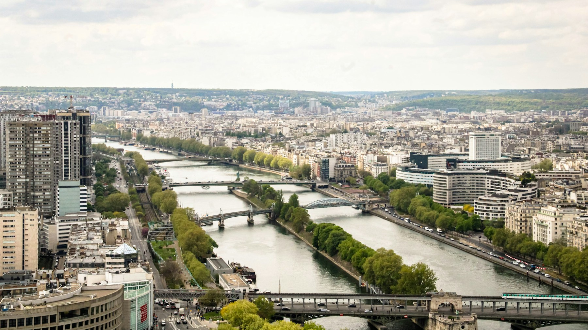
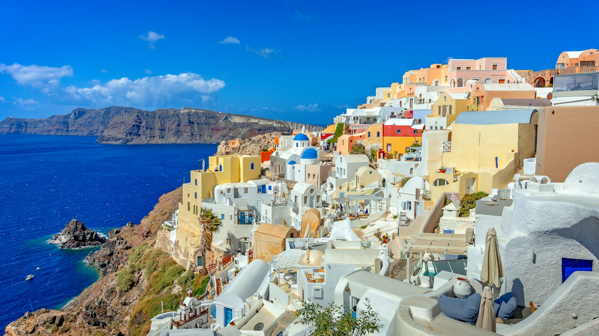
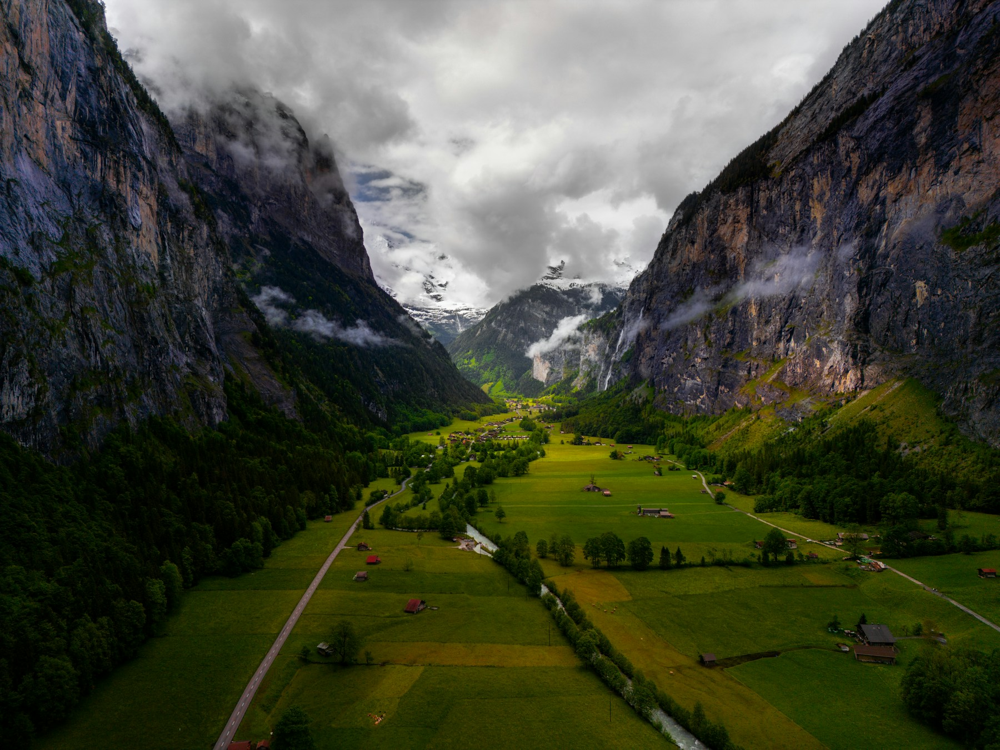

Italy by the sea.
Follow the coast from colourful fishing villages to the harbours of Cinque Terre.
Explore ItalyExplore by interest.
Start with a city, an island or a mountain village. See what each place has to offer and choose where you want to go next.

Cities and culture
Art, walks by the river and old towns.
Explore France
Islands and coast
Islands, beaches and old buildings.
Explore Greece
Mountains and nature
Mountain walks, quiet lakes and train trips with great views.
Explore Switzerland
A weekend in Porto.
Start on the Ribeira waterfront, then cross the Douro for a view back across the city. Leave time to explore the old streets on foot.
Read the Portugal guideGet ready for your trip.
A little preparation can make your trip easier. Learn what to pack, think about your travel costs and decide how to get between the places on your list.
What to pack.
Take the things you need. Leave some space in your bag for anything you buy.
Read the packing guide YOUR BUDGETPlan your
travel costs.
Work out the cost of travel and a place to stay. Add money for food and things to do.
Plan your travel costs GETTING AROUNDGetting around.
Plan how to get from one place to the next. Leave enough time for each journey.
Read transport tips